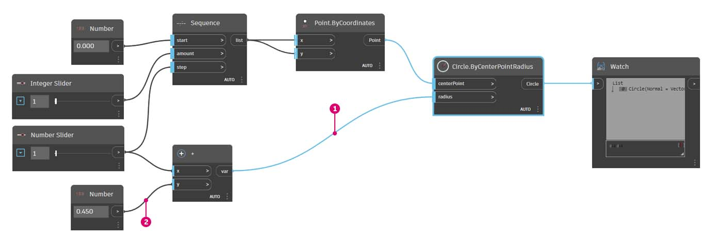

Nodes and Wires
Nodes
In Dynamo, Nodes are the objects you connect to form a Visual Program. Each Node performs an operation - sometimes that may be as simple as storing a number or it may be a more complex action such as creating or querying geometry.
Anatomy of a Node
Most Nodes in Dynamo are composed of five parts. While there are exceptions, such as Input Nodes, the anatomy of each Node can be described as follows:

- Name - The Name of the Node with a
Category.Namenaming convention- Main body - The main body of the Node - Right-clicking here presents options at the level of the whole Node
- Ports (In and Out) - The receptors for Wires that supply the input data to the Node as well as the results of the Node's action
- Default Value - Right-click on an input Port - some Nodes have default values that can be used or not used.
- Lacing Icon - Indicates the Lacing option specified for matching list inputs (more on that later)
Nodes Input/Output Ports
The Inputs and Outputs for Nodes are called Ports and act as the receptors for Wires. Data comes into the Node through Ports on the left and flows out of the Node after it has executed its operation on the right.
Ports expect to receive data of a certain type. For instance, connecting a number such as 2.75 to the Ports on a Point By Coordinates Node will successfully result in creating a Point; however, if we supply "Red" to the same Port it will result in an error.
{% hint style="info" %} Tip: Hover over a Port to see a tooltip containing the data type expected. {% endhint %}

- Port Label
- Tool Tip
- Data Type
- Default Value
Node States
Dynamo gives an indication of the state of the execution of your Visual Program by rendering Nodes with different color schemes based on each Node's status. The hierarchy of states follows this sequence: Error > Warning > Info > Preview.
Hovering or right-clicking over the Name or Ports presents additional information and options.

- Satisfied inputs - A node with blue vertical bars over its input ports is well-connected and has all of its inputs successfully connected.
- Unsatisfied inputs – A node with a red vertical bar over one or more input ports needs to have those inputs connected.
- Function – A node that outputs a function and has a gray vertical bar over an output port is a function node.
- Selected - Currently selected nodes have an aqua highlight around their border.
- Frozen - A translucent blue node is frozen, suspending the execution of the node.
- Preview off - A gray status bar underneath the node and an eye icon
indicate that geometry preview for the node is switched off.
- Warning - A yellow status bar underneath the node indicates Warning state, meaning the node either lacks input data or may have incorrect data types.
- Error - A red status bar underneath the node indicates that the node is in an Error state.
- Info - Blue status bar underneath the node indicates Info state, which flags useful information about nodes. This state can be triggered when approaching a maximum value supported by the node, using a node in a way that has potential performance impacts, etc.
Handling Error or Warning Nodes
If your Visual Program contains warning or errors, Dynamo will provide additional information about the problem. Any Node that is Yellow will also have a tooltip above the Name. Hover your mouse over the warning  or error
or error  tooltip icon to expand it.
tooltip icon to expand it.
{% hint style="info" %} Tip: With this tooltip information in hand, examine the upstream Nodes to see if the data type or data structure required is in error. {% endhint %}

- Warning Tooltip - "Null" or no data cannot be understood as a Double, i.e., a number
- Use the Watch Node to examine the input data
- Upstream the Number Node is storing "Red," not a number
Wires
Wires connect between Nodes to create relationships and establish the Flow of our Visual Program. We can think of them literally as electrical wires that carry pulses of data from one object to the next.
Program Flow
Wires connect the output Port from one Node to the input Port of another Node. This directionality establishes the Flow of Data in the Visual Program.
Input Ports are on the left side and the Output Ports are located on the right side of Nodes, hence, we can generally say that the Program Flow moves from left to right.

Creating Wires
Create a Wire by left-click on a Port subsequently left-click on the port of another Node to create a connection. While we are in the process of making a connection, the Wire will appear dashed and will snap to become solid lines when successfully connected.
The data will always flow through this Wire from output to input; however, we may create the wire in either direction in terms of the sequence of clicking on the connected Ports.

Editing Wires
Frequently we will want to adjust the Program Flow in our Visual Program by editing the connections represented by the Wires. To edit a Wire, left click on the input Port of the Node that is already connected. You now have two options:
- Change connection to an input Port, left-click on another input Port
.gif)
- To remove the Wire, pull the Wire away and left-click on Workspace

- Reconnect multiple wires using Shift+left-click

- Duplicate a wire using Ctrl+left-click

Default vs Highlighted Wires
By default, our Wires will be previewed with a gray stroke. When a Node is selected, it will render any connecting Wire with the same aqua highlight as the Node.

- Highlighted Wire
- Default Wire
Hide Wires by Default
In case you prefer to hide the Wires in your graph, you can find this option from View > Connectors > untick Show Connectors.
With this setting, only the selected Nodes and its joining Wires will be shown in faint aqua highlight.
.gif)
Hide Individual Wire Only
You can also hide selected wire only by Right-clicking on the Nodes output > select Hide Wires